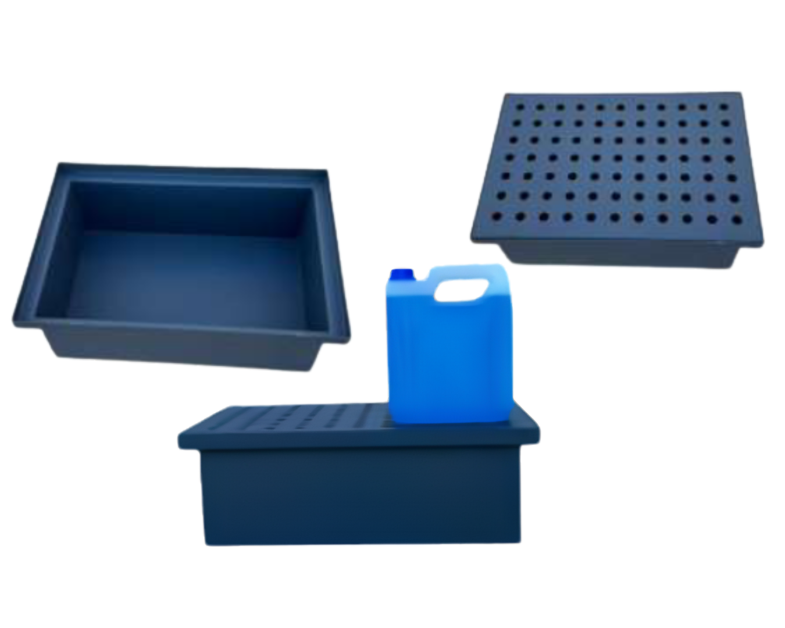

| Dimensions (LxlxH) | 60 x 40 x 22 cm |
| Capacité de Rétention | 40 Litres |
| Charge Maximale | 100 kg |
| Poids du bac | 15 Kg |
| Protection | Revêtement époxy |
Conçu pour le stockage en rétention de petites cuves et jerrycans de 40 litres.
Demander DevisLes informations techniques pour d'autres modèles seront ajoutées prochainement.